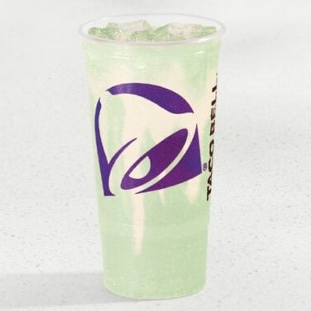

SOPHIA'S SODA RANKINGS
SOPHIA'S SODA RANKINGS
DIRTY BAJA BLAST
VERDICT: 10/10
There have previously been releases where Baja Blast was complemented with some type of creme flavoring, but this beverage was the best execution of this idea by far.
The initial flavor on first sip mostly tastes like a regular Baja Blast. The vanilla flavor then pleasantly slides in and consists of most of the aftertaste, with the tropical undertones of baja blast. Some flavored spinoffs struggle to balance the original flavor and the additional flavor incorporated: this is a very pleasant marriage of both.
The color of the drink is more appealing in person: the vanilla creme makes it more opaque than regular Baja Blast, so it takes on the nostalgic and whimsical hue of those little square tiles that live on the sides of chlorinated pools.
Note: the vanilla creme tends to settle if the drink is left alone for too long. I received two of these drinks by accident, so I put the other in the fridge to enjoy later. While stirring it mostly reincorporates everything, I did notice some little white chunks from the vanilla, which is a consideration if you are picky about textures. For this reason, I imagine that the current formulation won't be released in cans as is.
Overall, this is an excellent edition to the Baja Blast family and all of its variants.